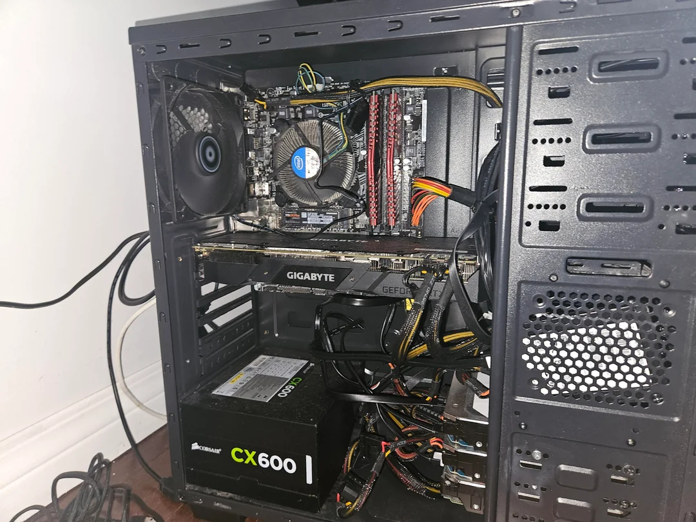
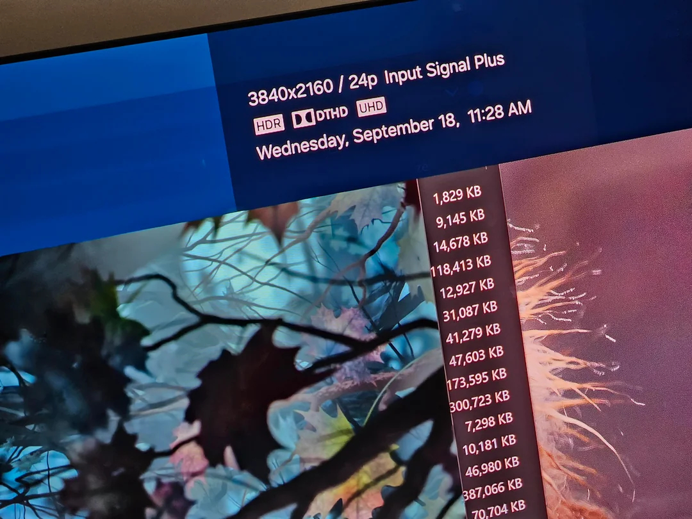
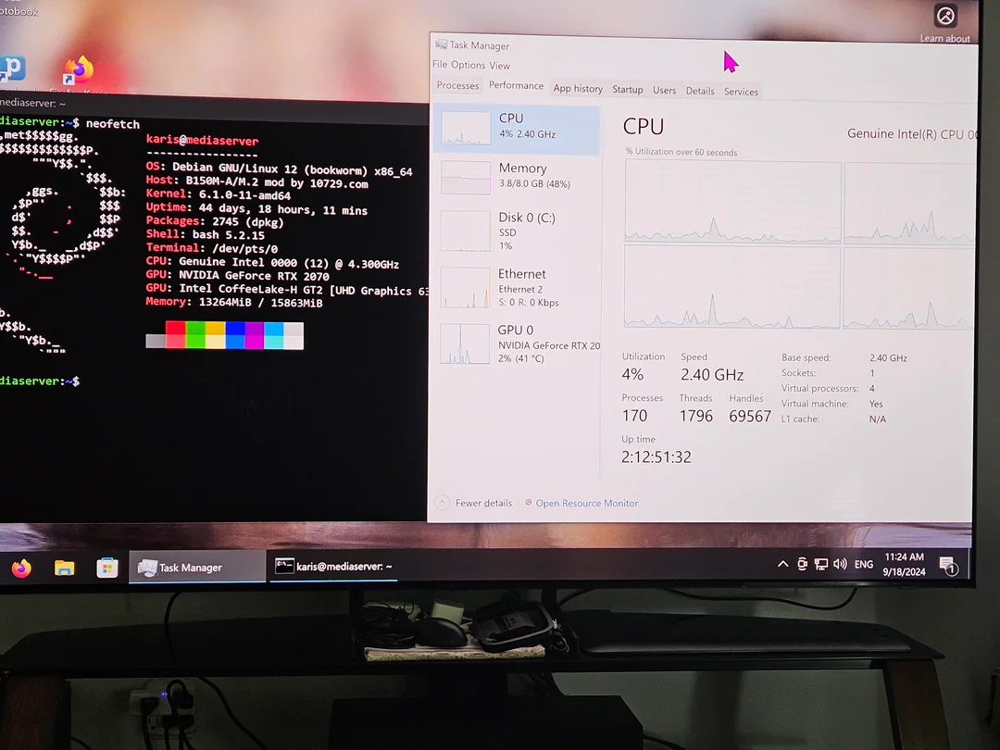
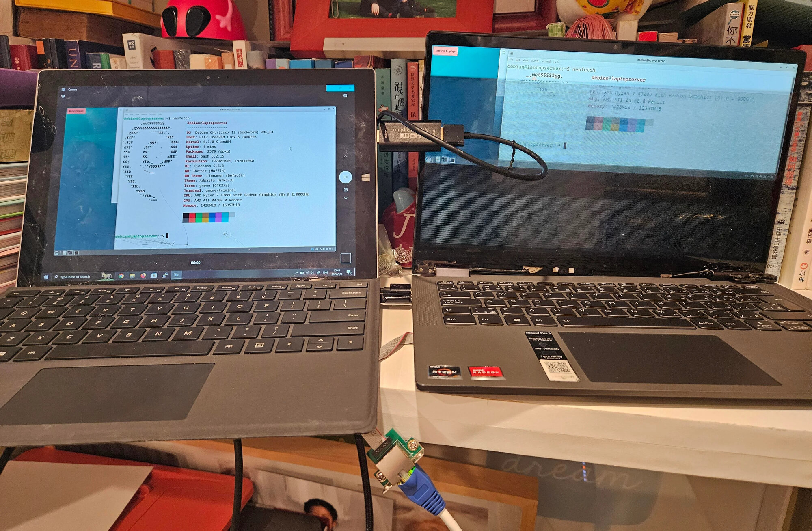
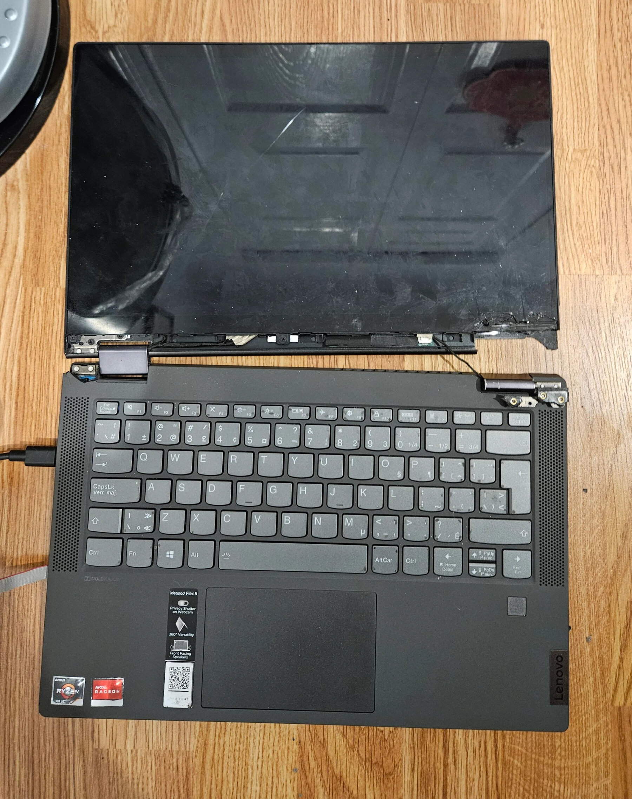
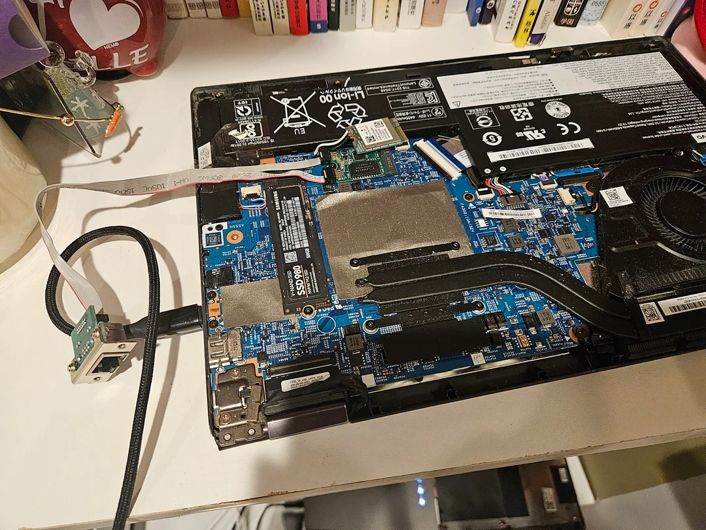
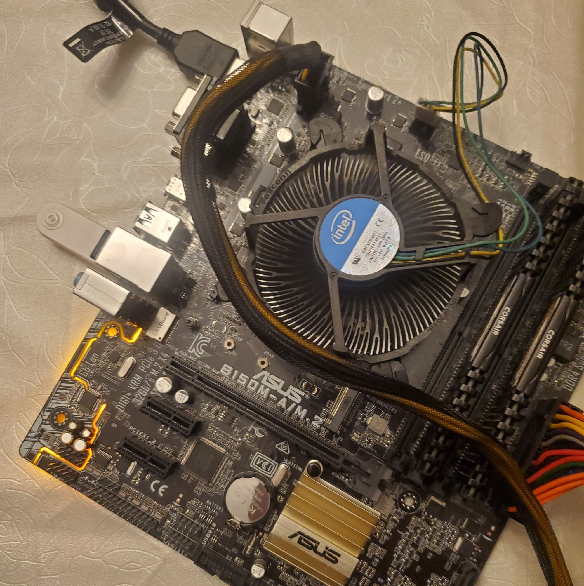
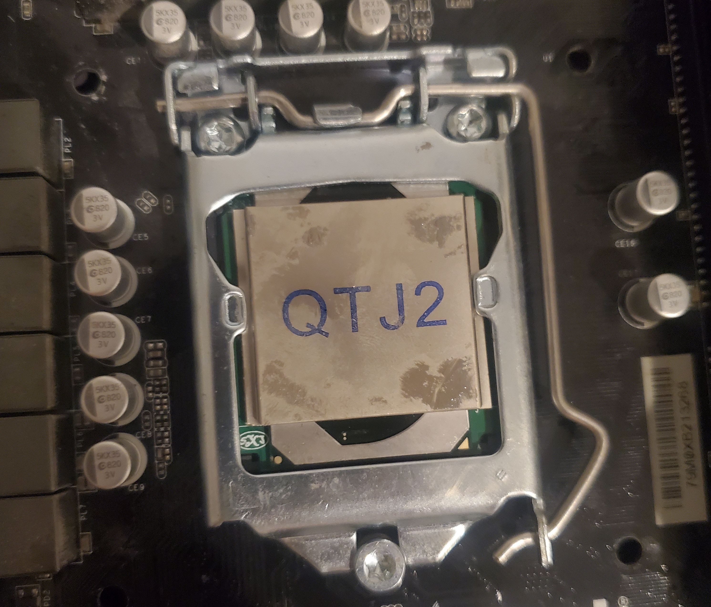
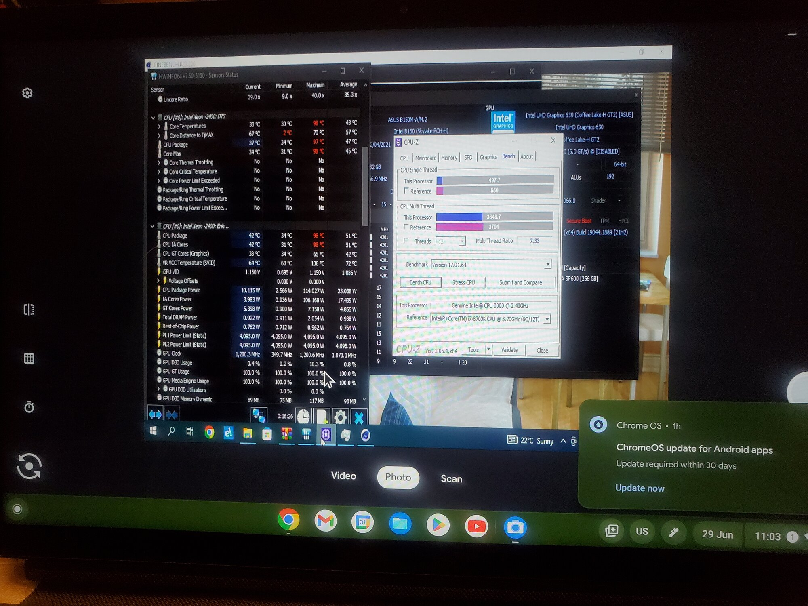

This section briefly showcase my homelab and selfhosting journeys and various "unusual" projects I've done. I enjoy working with hardwares, especially used components and use various tools and techniques to get the most out of them, including defective ones. Playing around with these hardware and self-hosting open source software allows me overcome various limitations to achieve my goals in the most efficient and cost-effective way.



My dad bought a 4K TV, but my Android TV box was still in transit. I couldn't play 4K HDR with lossless audio except on my gaming PC, which couldn't be moved. A temporary Android box that could work cost C$296, and I still need to spend more on HDMI splitters to use it with our old AV receiver. Furthermore, I recently sold some computer components that could be great for a HTPC and I only have a RTX 2070 GPU. Enter Kernel-based virtualization (KVM) with PCIe passthrough. I already have a functioning computer that is my Linux home server, so I installed my GPU to the server, configured QEMU and KVM with PCIe passthrough to a Windows virtual machine. Everything works great, as a added bonus, since the GPU has multiple HDMI ports, I don't need to purchase a splitter to use it with the TV and AV receiver; and the VirtIO para-virtualized networking means I get fast and direct access to my media stored on the server.
Using my knowledge in AV codecs and virtualization, I was able to create a solution that satisfy my needs and using what I already own to save money. I also learned a lot about KVM, Linux and Windows administration.



I got a Lenovo Flex laptop in Oct 2022 for university. During April 2023, I dropped the laptop causing cosmetic damage. In June 2023, I needed to flash a BIOS using CH341a USB hardware, the process fried all the USB ports (including webcam, Bluetooth) of that laptop. I tried to send it in for warranty but they refused to fix it because of the cosmetic damage earlier. New laptop or repairs cost money, and I only use the laptop for digital note-taking, if I needed to use USB device, I can use USB over IP which uses another computer to share the USB port over the network. I kept on using it, but during March 2024, the screen started flickering and it's no longer usuable, the laptop also suffered physical damage that the screen came apart.
I could repurpose it as a HTPC or a Zoom/Office machine, but the lack of screen, USB, webcam or HDMI 2.0 port makes it unfeasible. The only part that isn't broken with my laptop is the WiFi which uses PCIe x1. I took the opportunity and ordered a 2.5 GbE card from China, I installed it and works great. Despite the severe defects of the laptop, it still has a functioning CPU, SSD and now fast networking, making Linux server a great option (with the added bonus of low power!).
Many people would have thrown away the laptop or sold it for pennies, but using my knowledge in computer hardware, I've managed to squeeze out the last bit of value from it, despite the severe damage it incurred. The server runs many services, including the backup of this website you're reading now.
After running a single HDD with no backup for over a year, I bought 2 more HDDs from serverpartdeals.com. With 3 drives, I opted for SnapRAID, which allows for different drive sizes and filesystems, dedicating only one drive for parity. This setup is cost-effective and perfect for my media files. My drive is formatted in NTFS as its previously used on Windows and already have data, when I configurated SnapRAID, it's quick because I don't have to format my drives before creating an array. SnapRAID doesn't stripe data so I can spindown my drives especially my parity drive for longer, which reduces my electricity bill. In the future, I can easily add more drives and without long array rebuild times. I have comprehensive documentation on SnapRAID and performed hand-on tests to prepare for any data loss scenarios.
Rather than copying popular tutorials from YouTube, I've used SnapRAID to deploy a power efficient and flexible solution that is tailored to my needs, not the needs of the masses.



In the early days of my homelab, I had a Lenovo desktop server that lacks some features such as video transcoding and I wanted to upgrade. I found online that many cheap older Intel motherboard (1xx and 2xx) can be bios modded to support newer incompatible CPUs, even mutant CPUs from laptops. This is a cost-effective way to get amazing hardware. Equipped with this knowledge, I purchased a mutant CPU, CH341a flasher from China and motherboards from local used market. Initially I made some mistakes and broke some hardware, but with perserverance, I got another motherboard and successfully flashed the bios to support the mutant CPU.
The result has served me well. Not only the CPU is a great server with video transcoding, low-idle power and flexibility. I also used this PC as a desktop with my GPU over the summer, allowing me to play games and edit professional videos for my remote work, saving me gas and commute times. I would not be able to dual-purpose like this should I've gone with a conventional setup.
Currently, this mutant CPU is running my main server almost 24/7 with 42TB of redundant storage and critical services such as DNS, reverse proxy, VPN and more. The bios modding experience is eye-opening to me and I'm glad I took the risk to learn something new and save money.
I host media apps, websites, and game servers. On campus with restricted internet, I couldn't port forward. To allow my parents to stream media from my PC, I already have Wireguard VPN setup and they can already access via VPN IP address, but I want to try something more universal and accessible. I found out about Oracle Cloud VPS, which provide public servers in the cloud completely free. I also used Tailscale which provides easy VPN connection to my VPS. With VPN and reverse proxy setup on the cloud, I have a public IP address and all incoming connections would get forwarded to my campus PC over VPN, bypassing any restrictions. My parents are satisfied with the setup which allow them to stream media from my PC during their free times, and my friends are also able to play games without additional setup.
Not every networks are the same, exploring tunneling and cloud infrastructure has allowed me to adapt to the limitations of any network setups while still providing services at no cost.